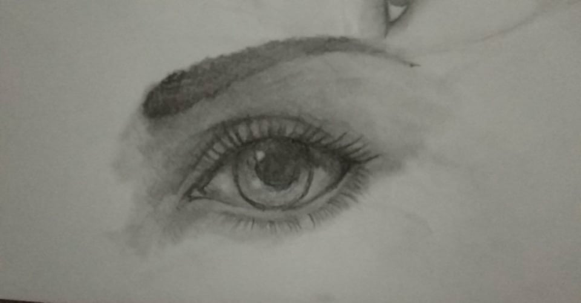

My name is Ran Hendrix C. Veral, I'm 20 years old. I have two sibling their name is Nicole Anne Veral (middle),
John Leemmuel Veral (youngest) and I'm the oldest son.My mother's name is Luzviminda Cabiao Veral and the name of my deceased father is Randy Bedicio Veral. In our family I am the first college student. Nicole is a senior high student in Buting while my youngest brother is still in grade school at Kalawaan. My hobbies are playing guitar, playing games (mmorpg, mobas and fps),
drawing, solving puzzles and logics and reading (manga,manhwa and manhua). My talents are drawing, playing guitar, making a design in t-shirt(a little bit), and painting. My strength in IT field is coding because I have a little knowledge about this subject. My weakness is, I'm having a hard time doing html, and to be honest I'm struggling a little bit in making this website. I want to become a professional IT programmer and
I am hoping that after 6 or 8 years I can tell to my friends, cousins, to my mother that I am now a professional IT programmer.